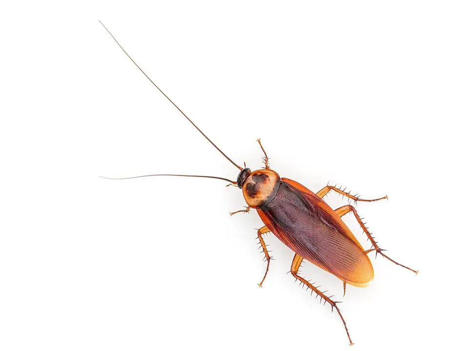
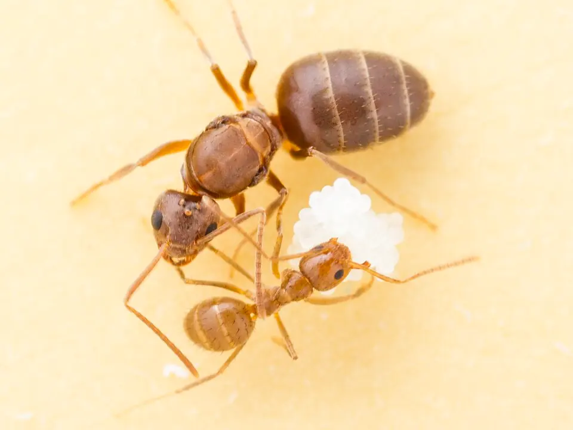
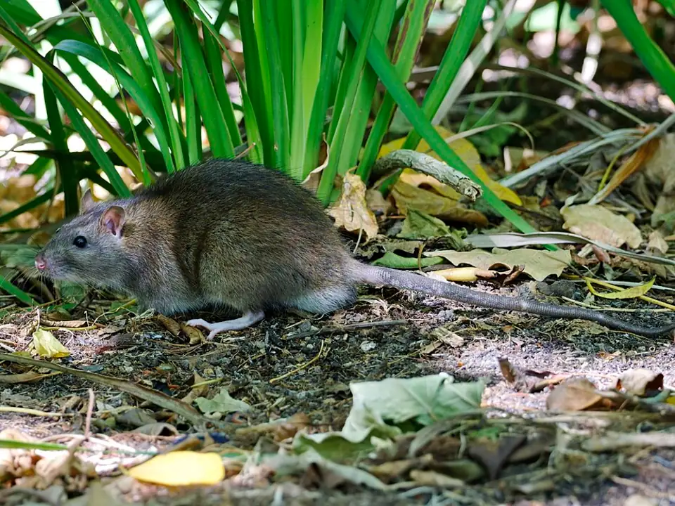
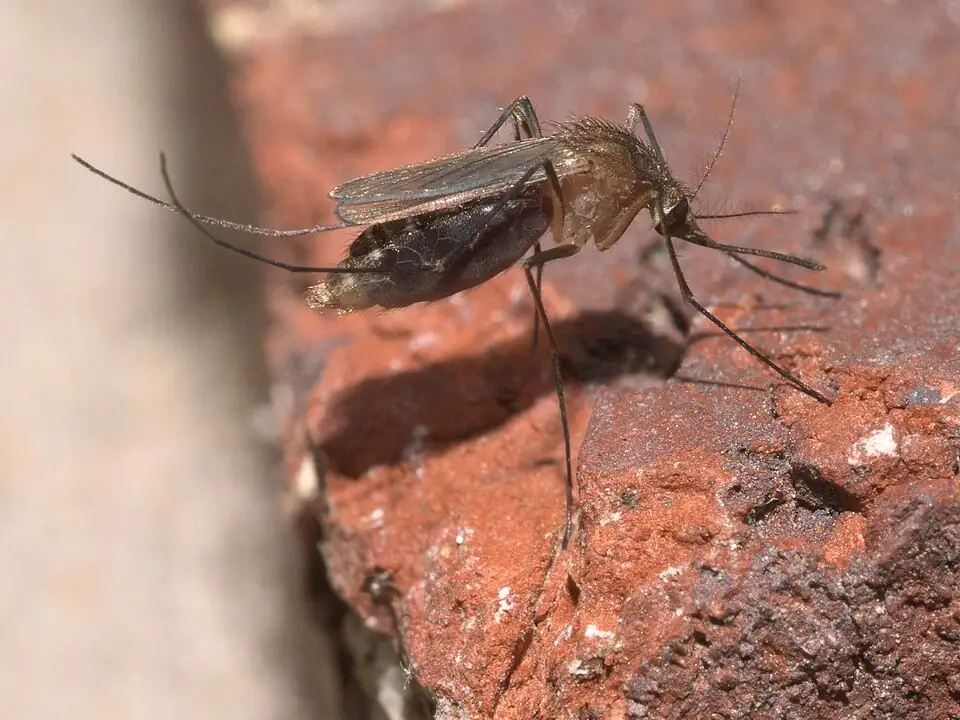

Baratas

Costumam aparecer à noite, perto da pia e dos ralos.
Por onde a vistoria começa
- Ralos
- Caixa de gordura
- Atrás da geladeira
- Armários da cozinha
- Garantia
- [prazo]
- A partir de
- R$ [valor]
Baratas, ratos, cupins, formigas e mosquitos em casas, condomínios e empresas de [região]. Também fazemos desentupimento e limpeza de caixa d'água.
Antes de aplicar qualquer produto, a gente olha com calma: por onde a praga entra, onde se esconde e o que realmente precisa ser feito. Depois deixa tudo por escrito.
As animações deste site são ilustrações. A vistoria é feita pelo técnico, no local.
Cada praga procura lugares diferentes. Escolha a sua e veja por onde a vistoria começa.

Costumam aparecer à noite, perto da pia e dos ralos.

Fazem trilha na parede, na bancada ou perto dos alimentos.

Dão sinal com barulho no forro à noite e embalagens roídas.
Deixam pó fino perto da madeira ou asas soltas perto das janelas.

Aparecem dentro de casa, principalmente no fim da tarde.
É outra praga? Mande uma foto pelo WhatsApp e a gente diz se atende.
Em casas, condomínios e empresas.
Pia, ralo, vaso sanitário, caixa de gordura e rede de esgoto. Você aprova o valor total antes de começarmos.
Para casas, condomínios e empresas. No fim, você recebe o registro com a data da limpeza.
Em cozinhas profissionais, a norma sanitária pede limpeza da caixa d'água a cada seis meses, com registro.
Mande o bairro e a praga pelo WhatsApp. Se puder, mande uma foto.
Você vê o valor e o que está incluído antes de qualquer serviço começar.
Antes da visita, você recebe o nome e a foto dele. No fim, ele entrega o comprovante.
Chame no mesmo WhatsApp, com o número do comprovante.
A RDC 622/2022, norma da Anvisa, pede 11 informações no comprovante de execução. É isto que você recebe.
Guarde este documento. É com ele que você aciona a garantia.
Estes são os registros da empresa. Confira antes de contratar.
O valor final vai por escrito antes de começar.
| Serviço | A partir de | O que o valor inclui | Garantia |
|---|---|---|---|
| Baratas | R$ [valor] | [o que inclui] | [prazo] |
| Formigas | R$ [valor] | [o que inclui] | [prazo] |
| Ratos | R$ [valor] | [o que inclui] | [prazo] |
| Cupins | R$ [valor] | [o que inclui] | [prazo] |
| Mosquitos | R$ [valor] | [o que inclui] | [prazo] |
| Desentupimento | R$ [valor] | [o que inclui] | [prazo] |
| Limpeza de caixa d'água | R$ [valor] | [o que inclui] | [prazo] |
Se a praga tratada voltar dentro do prazo, voltamos para reaplicar, sem custo de [itens cobertos]. O prazo começa na data do serviço. Para valer, é preciso [condições]. Não cobre [exclusões].
No desentupimento e na limpeza de caixa d'água, as condições da garantia vão por escrito no orçamento.
Para acionar, mande mensagem no mesmo WhatsApp com o número do comprovante. Respondemos em até [prazo]. Esta garantia complementa a garantia legal do Código de Defesa do Consumidor.
Você recebe uma proposta com valor fechado e os documentos de cada visita.
Informamos antes do serviço quando crianças e animais devem sair e quando podem voltar. As orientações vão por escrito, revisadas pelo responsável técnico.
O técnico usa equipamento de proteção e segue procedimentos escritos. Usamos saneantes com registro na Anvisa.
Depende da praga, do tamanho do local e do que a vistoria encontrar. A tabela acima mostra o valor inicial. O valor final vai por escrito antes de começar.
Depende do produto e do local. Antes da visita, informamos por escrito quando sair e quando voltar, inclusive para gestantes, crianças e animais.
Pode. Ovos que já estavam no local, entrada pelo vizinho e a limpeza do ambiente influenciam o resultado. Por isso cada praga tem um prazo de assistência por escrito.
Você aprova o valor total antes de começarmos. Se aparecer algo fora do combinado, paramos e pedimos sua aprovação antes de continuar.
Em cozinhas profissionais, a norma sanitária pede limpeza a cada seis meses, com registro. Em casa, seis meses também é a recomendação mais comum.
Sim. Muita gente escreve detetização, mas a grafia correta é dedetização. O serviço é o mesmo.
Não. O gavião é o nosso símbolo. Não realizamos falcoaria.